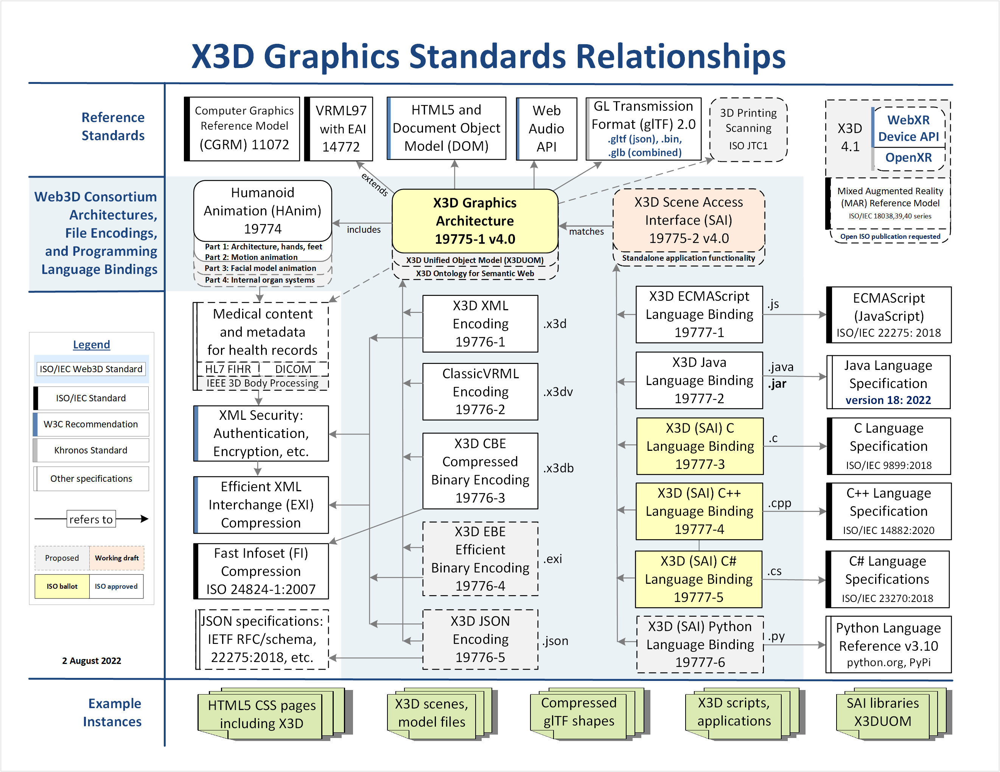
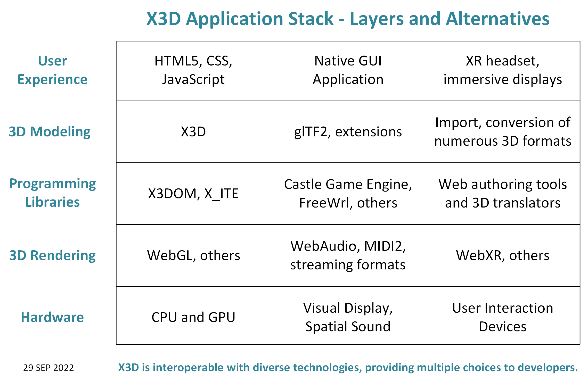

|
X3D Specifications: Schema and DOCTYPE Validation |
These assets are commonly used for XML validation of X3D scenes, and in-depth documentation is also provided here.
Recommended XML Validation Assets | Autogenerated Products | All Assets | Design Considerations | Feedback | JSON | License | References and Resources | X3D Resources | X3D Tooltips | Contact
These X3D Specifications assets include the latest versions of recommended XML/JSON Schemas and DOCTYPEs (DTDs) for the X3D International Standards, maintained by Web3D Consortium's X3D Working Group. Technical details are found in the Recommended X3D Standards.
Recommended Validation and Implementation Assets
|

X3D Graphics Standard: Specification Relationships shows current and planned specifications. (.pdf) |

X3D Application Stack - Layers and Alternatives shows various ways that developers can use X3D models. (.pdf) |
The X3D schema contains complete information about the X3D scene graph and object hierarchy. Since the schema is expressed as an XML document, XSLT stylesheets can produce corresponding HTML documents or even source code for X3D APIs in full detail.
Current contents of this archive directory follow.
X3D DTD. The X3D DTD (DOCTYPE) has simple expressive power.
X3D Schema. The X3D Schema has significant expressive power and includes a complete object model.
X3D Schematron. The X3D Schematron ruleset provides additional expressive power for checking X3D-specific rules and requirements. See X3D Schematron Validation and Quality Assurance (QA) for further detail.
Questions, suggestions and comments about these resources are welcome. Please send them to Don Brutzman (brutzman at nps.edu)
Available online at https://www.web3d.org/specifications
Version control of these master X3D DTD and Schema assets is maintained at
https://sourceforge.net/p/x3d/code/HEAD/tree/www.web3d.org/specifications
See the changelog files or subversion archives for detailed records of DTD and Schema updates. Contained assets are released following review and approval by Web3D Consortium members and the X3D Working Group.
Updated: 24 September 2022
{kind=link}
{kind=link}